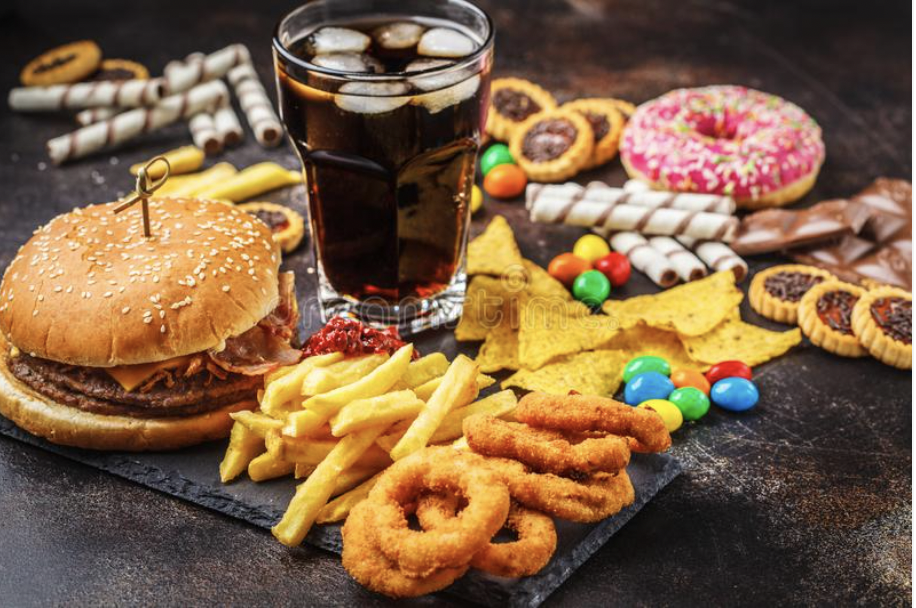

I am a practical knowledge seeker want to work in the environment where my skills and knowledge reflects growth of the company and enhance my knowledge as well as experience. Web development is a place where we can practically change the word with the new possibilities.To make it possible I learnt skills like NodeJs , HTML , CSS , Javascript, React , Java , Dsa(For competitve)
About me:
- Self-motivated, good team player, excellent problem solving, analytical skills.
- Bringing Positive attitude with good leadership skills and always open for feedback to learn & gain from experiences on regular basis.
- Looking for Internship to enhance my experience, education, and skills with an opportunity for growth and to prove as an asset to the organisation.
SKILLS
WORK EXPERIENCE
Member
Jan 22 - present(5months)
IEEE is a non-profit organization, is the world’s leading professional association for the advancement of technology. Through its global members, the IEEE is a leading authority on areas ranging from aerospace systems, computers and telecommunications to biomedical engineering, electric power
Jan 22 - present(5months)
IEEE is a non-profit organization, is the world’s leading professional association for the advancement of technology. Through its global members, the IEEE is a leading authority on areas ranging from aerospace systems, computers and telecommunications to biomedical engineering, electric power
Volunteer
Jan 22 - present(5months)
It is a philosophy that drives NSS volunteers all over the nation. We at NSS NSUT are a tandem of motivated and spirited young individuals who render their services to the nation in versatile domains.
It is a philosophy that drives NSS volunteers all over the nation. We at NSS NSUT are a tandem of motivated and spirited young individuals who render their services to the nation in versatile domains.
Maths Teacher
September 21 - December 21
As soon as i was finished with jee i start to teach a group of 4 students in my father's institute. I taught maths to students of class 8th and 11th and the result was amazing
As soon as i was finished with jee i start to teach a group of 4 students in my father's institute. I taught maths to students of class 8th and 11th and the result was amazing
HOBBIES
Cricket
Coding
Webdev

Travel
Football
Eating

Education
NSUT(Main Campus)
2022-2025
Netaji Subhas University of Technology (NSUT) is a seat of higher technical education in India. Prof. Jai Prakash Saini is the Founder Vice-Chancellor of Netaji Subhas University of Technology (NSUT), New Delhi. “The Delhi Netaji Subhas University of Technology Act, 2017 (DELHI ACT 06 OF 2018) (As passed by the Legislative Assembly of the National Capital Territory of Delhi on the 10th August, 2017) An Act to to provide for the reconstitution and upgradation of the Netaji Subhas Institute of Technology as a non-affiliating Netaji Subhas University of Technology, and to provide for education and research in branches of engineering, technology, sciences, humanities, social sciences and management and for the advancement of learning and dissemination of knowledge in such branches and for certain other matters connected therewith or incidental thereto;
2022-2025
Netaji Subhas University of Technology (NSUT) is a seat of higher technical education in India. Prof. Jai Prakash Saini is the Founder Vice-Chancellor of Netaji Subhas University of Technology (NSUT), New Delhi. “The Delhi Netaji Subhas University of Technology Act, 2017 (DELHI ACT 06 OF 2018) (As passed by the Legislative Assembly of the National Capital Territory of Delhi on the 10th August, 2017) An Act to to provide for the reconstitution and upgradation of the Netaji Subhas Institute of Technology as a non-affiliating Netaji Subhas University of Technology, and to provide for education and research in branches of engineering, technology, sciences, humanities, social sciences and management and for the advancement of learning and dissemination of knowledge in such branches and for certain other matters connected therewith or incidental thereto;
Manav Sthali School
2015-2021
Our mission is to provide a congenial & safe environment to foster our students holistically into empowered, compassionate, skilled global citizens who will take our country to greater heights. Our focus is well balanced development of every child: physically, intellectually, creatively, emotionally, spiritually, morally and aesthetically.
Our mission is to provide a congenial & safe environment to foster our students holistically into empowered, compassionate, skilled global citizens who will take our country to greater heights. Our focus is well balanced development of every child: physically, intellectually, creatively, emotionally, spiritually, morally and aesthetically.
Vivek Submit
2011-2015
I learned a lot of things , participated in many events and got a lot of experience. Some of my bad qualities at that time was easily influenced by someone. Got good grades in my whole schooling life
I learned a lot of things , participated in many events and got a lot of experience. Some of my bad qualities at that time was easily influenced by someone. Got good grades in my whole schooling life